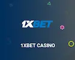
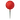
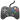
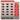
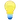
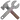
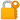

Plinko México - Jogue Online
-

Bono de bienvenida: hasta 1.950 € + 150 giros gratis
Bono en 4 depósitos
Licencia: Curazao eGaming
1xBet Casino
Juega Ahora8.9 / 10
-
Bono de bienvenida: hasta $1,000
Depósito mínimo: $10
125 giros gratis en Big Bass Hold y Spinner
Licencia: Malta Gaming Authority
Betway Casino
Juega Ahora8.6 / 10
-
Bono de bienvenida: 50% hasta ₦200,000
Bonos de casino y deportes
Licencia: Autoridade de Jogo de Portugal
Betano Casino
Juega Ahora8.8 / 10
-
Bono de bienvenida: 500% hasta $2,800
Depósito mínimo: $1
Licencia: Curazao eGaming
1win Casino
Juega Ahora9.1 / 10
Detalles generales del juego Plinko:
| Atributo |  Detalles |
|---|---|
|  Nombre del juego | Plinko |
|  Creador original | Presentado originalmente en el programa “The Price is Right” (CBS, Estados Unidos). |
| Año de creación | 1983 (versión para televisión); versiones digitales disponibles desde mediados de los años 2000. |
| Versión digital moderna | Desarrollada por proveedores como Spribe, BGaming y otros |
|  Mecánica | Juego de azar en el que una bola desciende por un tablero con clavijas hasta alcanzar un multiplicador. |
| RTP (retorno al jugador) | Entre 97% y 99% dependiendo del casino y configuración |
| Niveles de riesgo | Bajo, medio y alto (influyen en la volatilidad y los premios). |
| Modo de apuesta | Apuesta fija por cada lanzamiento, con opción de utilizar múltiples bolas. |
|  Funciones destacadas | Automático, turbo, demo gratuito, personalización de riesgo |
| Compatibilidad | Disponible en versión web, móvil y apps (Android / iOS) |
| Popularidad en México | Muy elevada debido a su sencillez, dinamismo y la posibilidad de obtener ganancias reales de forma rápida. |
| Recomendación | Solo para mayores de 18 años. Jugar con responsabilidad. |
¿Qué proveedores de software tienen el juego Plinko en su catálogo?
El éxito del juego Plinko en línea se debe a varios desarrolladores de software que han logrado trasladar el clásico formato físico al mundo digital. Estas compañías no solo crean versiones operativas, sino que también mejoran el apartado visual, aseguran la compatibilidad con dispositivos móviles y certifican el funcionamiento mediante tecnologías imparciales como el RNG (Generador de Números Aleatorios).
Uno de los desarrolladores más reconocidos es Spribe, conocido por su interfaz limpia, rendimiento fluido y enfoque transparente. Su versión destaca en México gracias a su elevado RTP, compatibilidad con móviles y diseño moderno. BGaming es otro proveedor destacado, con gráficos dinámicos y funciones que permiten ajustar tanto el nivel de riesgo como los multiplicadores de forma manual.
También hay estudios más pequeños, como SmartSoft o Gamzix, que han lanzado versiones con características adicionales, como misiones, logros o jackpots progresivos. Estas variantes están pensadas para jugadores que buscan una experiencia más dinámica y desafiante.
Antes de elegir un casino, es recomendable verificar qué proveedor ofrece la versión del juego, ya que la calidad, el diseño y las funciones pueden variar considerablemente. Las mejores opciones están auditadas y licenciadas, lo cual asegura que cada caída de bola sea completamente justa y aleatoria.
| Proveedor | Características destacadas | Compatibilidad | Funciones especiales |
|---|---|---|---|
| Spribe | Diseño minimalista, interfaz clara y RTP competitivo | Web, Android, iOS | Modo automático, selección de riesgo, historial de jugadas |
| BGaming | Visuales animados, sonidos envolventes y alta fluidez | Web, app móvil | Control manual de la trayectoria, modos turbo y auto |
| SmartSoft | Estilo arcade, recompensas dinámicas y misiones | Navegador móvil y PC | Sistema de logros, giros gratis, tabla de clasificación |
| Gamzix | Estética de casino clásico con efectos brillantes | Compatible con todos los dispositivos | Jackpots progresivos, niveles de bonificación |
¿Por qué es tan emocionante este juego en línea?
El Plinko se ha posicionado como uno de los juegos preferidos por los jugadores en México. Su dinámica es sencilla pero llena de emoción: una bola desciende desde la parte superior de un tablero repleto de clavijas, rebotando de forma impredecible hasta aterrizar en una casilla con un multiplicador, que define el premio final.
A diferencia de muchos otros juegos de casino, Plinko combina el azar con un toque de estrategia, lo que lo convierte en una opción atractiva tanto para principiantes como para usuarios con más experiencia. Lo mejor de todo es que está disponible en cualquier momento y desde cualquier dispositivo.
Diseño visual del Plinko game - simpleza que atrapa
Visualmente, el plinko juego es limpio, moderno y fácil de entender. El tablero suele tener un diseño vertical con múltiples filas de clavijas. Las plinko balls rebotan creando suspenso con cada movimiento.
Muchos casinos permiten elegir colores de bola, velocidad de caída y hasta número de bolas lanzadas al mismo tiempo. Esa personalización aumenta la inmersión y hace del casino plinko una experiencia más interactiva.
Juega AhoraMecánica del juego
Este juego está diseñado para ser directo, pero a la vez emocionante en cada jugada. Algoritmo paso a paso para un juego exitoso
-
Elige tu apuesta: Decide cuánto quieres apostar. Puedes comenzar con cantidades bajas en pesos mexicanos (MXN).
-
Define el nivel de riesgo: Bajo, medio o alto, lo que afecta directamente el tipo de multiplicador que puedes obtener.
-
Lanza la bola: Pulsa el botón para soltar una plinko ball. Puedes elegir la posición de inicio.
-

Espera el resultado: La bola caerá en una casilla con multiplicador. Tu ganancia se calcula automáticamente.
La sencillez de esta mecánica ha hecho que muchas personas se interesen por este juego y busquen como se juega plinko. En menos de cinco minutos, cualquier persona puede comenzar a jugar con confianza, ya sea en modo demo o con dinero real.
Cómo jugar Plinko para ganar dinero real de forma segura y estratégica
Si quieres jugar al plinko para ganar dinero real, no te lances sin plan. Empieza poco a poco, usa los recursos disponibles y mantén siempre el control de tu juego.
-
Empieza con el modo demo para familiarizarte.
-
Establece un presupuesto de juego claro.
-
Aprovecha los bonos y promociones disponibles.
-
Ajusta el nivel de riesgo según tu estilo de juego.
-
Observa tus resultados y adapta tu estrategia.
¿Dónde jugar en un casino en México?
Vive la emoción de Plinko online como nunca antes. Pero recuerda: conocer las reglas es clave, y elegir un casino seguro lo es aún más. En México, solo algunos casinos en línea ofrecen una experiencia 100 % confiable, justa y transparente. ¡Apuesta con inteligencia y juega donde realmente vale la pena!
Porque el sitio que elijas será el encargado de manejar tu dinero, proteger tus datos personales y asegurar un juego justo y sin fallos. Un casino poco confiable puede ofrecer pagos lentos, mal servicio al cliente o incluso juegos manipulados.
Por eso, si quieres disfrutar de Plinko sin preocupaciones, elige siempre un casino con buena reputación y trayectoria comprobada. ¡Tu seguridad y diversión lo merecen!

Aspectos esenciales al escoger un casino en línea
-
 Casino con licencia válida
Casino con licencia válida
-
Métodos de pago confiables
-
Juegos certificados
-
Promociones reales y sin trampas
-
Optimización móvil
-
Opiniones de otros jugadores
-
Atención al cliente en español
¿Cuál es nuestra recomendación para jugar Plinko?
Tras analizar decenas de plataformas, nuestro equipo ha elegido cuidadosamente algunos casinos en línea que cumplen con todos los requisitos clave. Estos sitios ofrecen el juego Plinko con la posibilidad de jugar gratis o con dinero real, atención al cliente en español y bonos muy atractivos para nuevos usuarios.
Descubre los mejores casinos para jugar Plinko ahora mismo en nuestra web
-
Bono de bienvenida: hasta 1.950 € + 150 giros gratis
Bono en 4 depósitos
Licencia: Curazao eGaming
1xBet Casino
Juega Ahora8.9 / 10
-
Bono de bienvenida: hasta $1,000
Depósito mínimo: $10
125 giros gratis en Big Bass Hold y Spinner
Licencia: Malta Gaming Authority
Betway Casino
Juega Ahora8.6 / 10
-
Bono de bienvenida: 50% hasta ₦200,000
Bonos de casino y deportes
Licencia: Autoridade de Jogo de Portugal
Betano Casino
Juega Ahora8.8 / 10
-
Bono de bienvenida: 500% hasta $2,800
Depósito mínimo: $1
Licencia: Curazao eGaming
1win Casino
Juega Ahora9.1 / 10
¿Cuáles son las ventajas y riesgos de apostar en línea?
Ventajas
-
Disponible en modo demo y con Plinko dinero real
-
RTP alto en comparación con otros juegos
-
Historial detallado de apuestas
-
Fácil de jugar, incluso para principiantes
-
Adaptable a móviles y PC
Desventajas
-
Los cambios bruscos por la alta volatilidad pueden ser molestos
-
Puedes no recibir los bonos
-
El resultado depende del azar
Plinko tiene diferentes versiones del juego
Aunque el clásico juego de Plinko ya ofrece una experiencia emocionante, en los últimos años han surgido versiones renovadas que lo hacen aún más impactante visualmente, versátil y adaptado a diferentes estilos de jugadores. Estas nuevas ediciones incorporan tecnologías modernas, opciones de personalización e incluso modos competitivos.
Probar estas variantes puede ayudarte a encontrar la que mejor se adapta a tu estilo de juego, tu presupuesto y tus expectativas. A continuación, te mostramos las versiones más destacadas del plinko game online que hoy están disponibles en los principales casinos.
Plinko X: la evolución visual del clásico
Plinko X se ha consolidado como una de las versiones favoritas entre los jugadores en México. Conserva la esencia del formato tradicional, pero añade mejoras técnicas y gráficas notables.
- Entorno 3D con animaciones suaves y sonido envolvente.
- Modo turbo y automático para lanzar varias bolas al mismo tiempo.
- Diferentes tableros con más líneas y clavijas para mayor variedad.
- Controles avanzados para ajustar velocidad, rebote y mostrar probabilidades.
Esta versión es ideal para quienes desean una experiencia más moderna sin dejar de lado la mecánica original. En cuanto al RTP y al riesgo, suele mantenerse similar, aunque algunos casinos ajustan los pagos según su configuración.
Plinko XY: una experiencia para jugadores más exigentes
Pensado para quienes buscan un nivel superior de interactividad, Plinko XY lleva el juego a otra dimensión. No solo se trata de lanzar bolas: esta versión integra elementos de progresión, misiones y competitividad.
- Logros desbloqueables, niveles y recompensas.
- Eventos con premios por cumplir desafíos diarios o mantener rachas.
- Clasificaciones, torneos semanales y rankings de jugadores.
- Mecánicas estratégicas: puedes definir patrones y personalizar reglas.
Muchos jugadores avanzados eligen esta variante porque transforma el plinko casino game en una aventura mucho más completa, en la que el azar se combina con la estrategia.
Bonos de Plinko
Puedes acceder a bonos para jugar Plinko justo después de registrarte, en forma de bono de bienvenida. No obstante, es importante leer con atención los términos del casino, ya que en algunos casos los giros gratis se otorgan únicamente para ciertas tragamonedas. En cambio, el bono por depósito suele tener un uso más flexible, lo que te permite utilizarlo, por ejemplo, para jugar Plinko.
También están disponibles otros tipos de bonificaciones:
- bonos sin depósito;
- bonos por realizar un depósito;
- códigos promocionales;
- giros gratis por tu cumpleaños;
- recompensas por avanzar de nivel en el programa VIP.
Recomendaciones para sacar el máximo provecho a los bonos
- Revisa siempre las condiciones del bono
- Evita usar bonos en juegos restringidos
-
Aprovecha los bonos como parte de tu estrategia
- Activa los bonos cuando vayas a jugar
Gestionar bien los bonos puede marcar la diferencia entre una partida rápida y una sesión repleta de oportunidades. Con una estrategia adecuada y el casino ideal, los bonos pueden convertirse en una ventaja clave en el mundo de Plinko con dinero real.
Plinko gratis: disfruta del juego en modo demo sin riesgo alguno
¿Aún no te animas a apostar dinero real? Prueba Plinko gratis en modo demo y juega sin ningún riesgo.
-
Sin registro ni depósito: juega al instante
-
Perfecto para practicar y pulir tu estrategia
-
Misma experiencia, interfaz y funciones que la versión con dinero
real
¡Descubre cómo funciona el juego y prepárate para dar el siguiente paso!
Jogar demoEstrategias de juego para obtener mejores resultados
-
Trucos para principiantes
-
Controla tu presupuesto en todo momento.
-
Empieza en riesgo bajo y apuesta poco.
-
Juega en modo demo para entender el juego.
-
-
Técnicas avanzadas para expertos
-
Analiza tus resultados y adapta tus decisiones.
-
Gestiona tu banca con objetivos claros.
-
Combina diferentes niveles de riesgo estratégicamente.
-
Juega Plinko en tu móvil
Hoy en día, más del 70 % de los jugadores en línea en México eligen sus smartphones para acceder a los juegos. Plinko no se queda atrás. Su diseño ágil, simple y 100 % responsivo lo convierte en una opción perfecta para disfrutar desde cualquier dispositivo móvil.
No importa si usas Android o iOS: puedes acceder al juego Plinko online de forma fluida y sin interrupciones. Las principales plataformas de casino ya han optimizado sus sitios para ofrecer una experiencia móvil tan buena —o incluso mejor— que en computadoras de escritorio.
Beneficios de jugar Plinko desde tu dispositivo móvil
- Acceso inmediato estés donde estés
- Interfaz táctil optimizada
- Rendimiento ágil y sin interrupciones
- Promociones directas a tu móvil
-  Máxima seguridad en cada sesión

¿App o navegador? Ambas opciones son válidas
Muchos casinos ofrecen apps dedicadas para Android y iOS, pero también puedes acceder al plinko game directamente desde el navegador móvil (como Chrome o Safari). Ambas opciones tienen ventajas:
-
App: Mayor velocidad, notificaciones automáticas, mejor integración con el sistema operativo.
-
Navegador: No requiere instalación, ideal para dispositivos con poco espacio.
Rendimiento del Plinko casino en dispositivos móviles
| Plataforma | Compatibilidad | Experiencia de juego |
|---|---|---|
| Android | Teléfonos y tablets con Android 7.0 o superior | Muy fluida, ideal para jugar plinko online |
| iOS | iPhone/iPad con iOS 13 o superior | Excelente rendimiento, soporte completo para plinko juego |
| Navegador móvil | Cualquier dispositivo con conexión | Acceso rápido sin descargar apps |
Ventajas y desventajas de jugar online desde el navegador
-
No requiere instalación ni espacio en el dispositivo.Compatible con cualquier sistema operativo.
-
Puede consumir más datos móviles.Algunas animaciones no cargan tan fluidas como en apps.
Seguridad, privacidad y soporte al jugador
Muchos jugadores principiantes se preguntan si el juego Plinko es realmente confiable. La respuesta es sí, siempre que juegues en un casino con licencia oficial y buena reputación. Estos sitios operan bajo estrictos controles, auditorías y sistemas de protección que garantizan un entorno de juego seguro.
Además, el Plinko casino game funciona con tecnología RNG (generador de números aleatorios), lo que asegura que cada lanzamiento sea completamente impredecible y libre de manipulaciones. Gracias a esto, puedes confiar en que los resultados son justos y transparentes para todos los jugadores.
Seguridad técnica y de datos personales
-

Protección de cuenta: puedes activar la autenticación en dos pasos y utilizar métodos biométricos en tu móvil, como la huella digital o Face ID.
-
Encriptación SSL de 256 bits: todos los datos que ingresas — como contraseñas, información bancaria o documentos— están cifrados y protegidos contra accesos no autorizados.
-
Auditorías externas: El plinko game online está regularmente revisado por laboratorios independientes como eCOGRA o iTech Labs, que validan la equidad del juego.
Confidencialidad
Los casinos responsables cuentan con políticas claras de privacidad que garantizan que tu información personal no será vendida ni compartida con terceros sin tu consentimiento. Además, tienes derecho a solicitar la eliminación de tus datos en cualquier momento.
Antes de registrarte en un sitio donde se ofrezca el plinko online, asegúrate de leer su aviso de privacidad y términos legales. Si el casino es serio, toda esta información estará fácilmente accesible.
Juega ahoraFAQ – Preguntas frecuentes sobre el juego Plinko
-
¿Puedo jugar Plinko sin registrarme en un casino?
Sí, muchos casinos ofrecen la opción de jugar en modo demo sin necesidad de crear una cuenta. Esta modalidad gratuita es ideal para conocer cómo funciona el juego y practicar tus estrategias sin ningún riesgo. Sin embargo, para jugar Plinko para ganar dinero real, sí necesitarás registrarte e ingresar tus datos.
-
¿Cuánto dinero necesito para empezar a jugar Plinko?
Depende del casino, pero la mayoría permite comenzar con apuestas mínimas desde $10 o $20 MXN. Esto hace que el plinko juego sea accesible para cualquier bolsillo. Puedes ajustar la apuesta en cada ronda según tu presupuesto y estilo de juego.
-
¿Cuál es la diferencia entre riesgo alto, medio y bajo en Plinko?
El nivel de riesgo que eliges afecta directamente los multiplicadores disponibles. Con riesgo bajo, las ganancias son más frecuentes pero pequeñas. En cambio, con riesgo alto puedes ganar mucho más… pero con menor probabilidad. Es una decisión estratégica que cambia totalmente la dinámica del plinko casino game.
-
¿Plinko es un juego justo o está manipulado?
El plinko game online utiliza un generador de números aleatorios (RNG) certificado, lo que garantiza que cada resultado sea 100% aleatorio. Si juegas en casinos regulados y licenciados, puedes estar seguro de que el juego no está manipulado. Aun así, siempre es importante leer las condiciones de cada sitio.
-
¿Puedo usar criptomonedas para jugar Plinko?
Sí, varios casinos modernos ya aceptan criptomonedas como método de pago para el plinko juego. Puedes depositar, apostar y retirar ganancias en Bitcoin, Ethereum y otras monedas digitales. Solo asegúrate de que el casino tenga soporte cripto y sea seguro.
-
¿Se puede ganar dinero real jugando Plinko o es solo entretenimiento?
Definitivamente se puede ganar dinero real jugando Plinko, siempre que estés en un casino que lo permita. Sin embargo, es un juego de azar y no existe ninguna fórmula mágica para ganar siempre. La clave está en divertirte, usar estrategias responsables y no apostar más de lo que puedas permitirte perder.